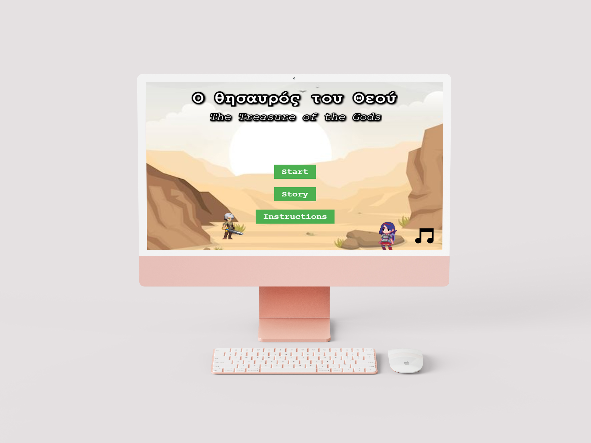
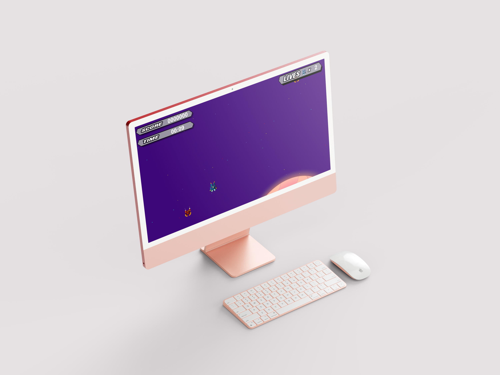

神之寶藏 雙人合作網頁遊戲
這是一款以 Phaser 製作的 2D 平台跳躍遊戲，玩家間透過合作解開機關，通過關卡。我主要負責關卡整合與流程控制，實作了多場景管理、關卡切換邏輯、勝利與失敗條件判定，並設計場景之間的觸發流程與轉場效果，確保遊戲節奏清晰、有層次感。

skyline-strike unity小遊戲
這是一款以 Unity 製作的橫向飛行射擊遊戲，玩家可操作飛機左右移動並射擊敵機，擊落敵人可獲得分數。遊戲具備敵人生成、子彈碰撞、分數計算、死亡條件與 UI 顯示。我負責整體遊戲邏輯開發，包含角色控制、物件碰撞判定、狀態切換與 UI 整合。